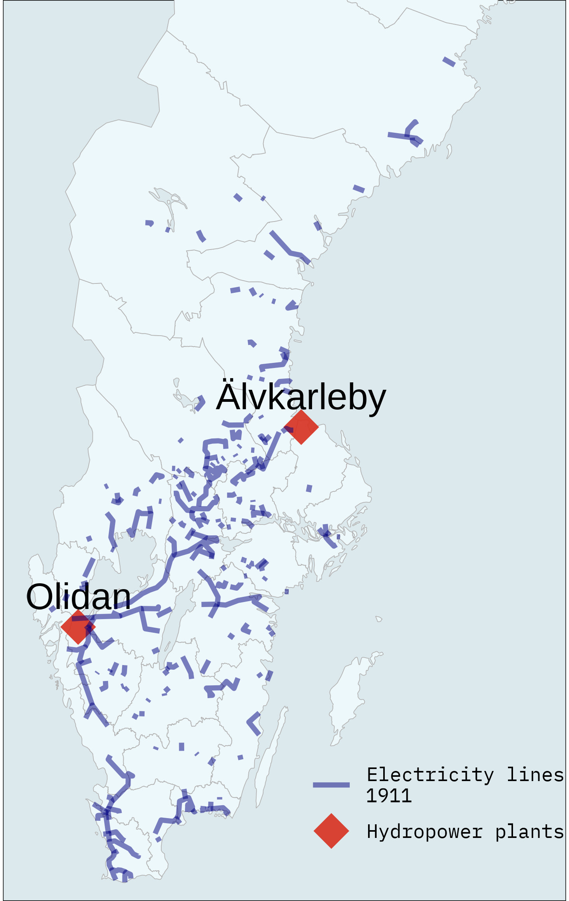

Messy Biographies to Clean Data - Structuring Text with LLMs and Pydantic
FOO CAFE 13 years strong
Jonathan Jayes
2025-08-27
Agenda
Whirlwind tour through Swedish economic history
Messy Biographies to Clean Data
Goals
Teach you something you didn’t know about Sweden’s economic history
Show how we make use of modern data science tools in academia
About me
PhD student in Economic History at Lund
Work on economic development in Sweden and tools to turn archival data into stories
Work part time as a data scientist at Codera Analytics
From South Africa originally
Whirlwind tour through Swedish economic history
When did Sweden become richüá∏üá™üí∏?
We need more context
When did Sweden become richüá∏üá™üí∏?
Versus the rest of the world
When did Sweden become richüá∏üá™üí∏?
Versus the first industrializing country üá¨üáß and South Africa üáøüá¶
Why did Sweden become richüá∏üá™?
%%{init: {
"theme": "base",
"themeVariables": {
/* Dark2 palette */
"ganttCritTaskColor": "#1b9e77", /* Phase 1 */
"ganttCritTaskTextColor": "#ffffff",
"ganttCritTaskBorderColor": "#1b9e77",
"ganttActiveTaskColor": "#d95f02", /* Phase 2 */
"ganttActiveTaskTextColor": "#ffffff",
"ganttActiveTaskBorderColor": "#d95f02",
"ganttDoneTaskColor": "#7570b3", /* Phase 3 */
"ganttDoneTaskTextColor": "#ffffff",
"ganttDoneTaskBorderColor": "#7570b3",
"lineColor": "#888",
"primaryColor": "#f5f5f5",
"primaryBorderColor": "#888",
"fontSize": "14px"
}
}}%%
gantt
title Sweden's Economic Development c. 1850–1975
dateFormat YYYY
axisFormat %Y
%% Milestones (neutral)
section Milestones
Second Industrial Revolution begins :milestone, M1, 1890, 0d
Post-war reconstruction era starts :milestone, M2, 1945, 0d
Swedish Golden Age winds down :milestone, M3, 1975, 0d
%% Phase 1 -> tag: crit (teal)
section Foundations and First Industrial Wave
Agrarian reforms and institutions :crit, A1, 1820, 1870
Export-led growth timber iron oats :crit, A2, 1850, 1890
National railway build-out state-led:crit, A3, 1855, 1895
%% Phase 2 -> tag: active (orange)
section Second Industrial Revolution
Rise of engineering multinationals ASEA SKF Ericsson :active, B1, 1890, 1925
American technology transfer learning-returning engineers :active, B2, 1900, 1935
Taylorist methods diffuse :active, B3, 1910, 1935
US FDI and mass-production plants :active, B4, 1910, 1930
%% Phase 3 -> tag: done (purple)
section Golden Age and the Swedish Model
Post-war boom :done, C1, 1945, 1965
Swedish Model consolidates :done, C2, 1950, 1975
Fordism at scale :done, C3, 1950, 1970
Many reasons!!
Why did Sweden become richüá∏üá™?
My preferred explanation: Sweden’s Electrification
Why did Sweden become richüá∏üá™?
My preferred explanation: Sweden’s Electrification

Why did Sweden become richüá∏üá™?
My preferred explanation: Sweden’s Electrification
Why did Sweden become richüá∏üá™?
My preferred explanation: Sweden’s Electrification

Why did Sweden become richüá∏üá™?
My preferred explanation: Sweden’s Electrification
Why did Sweden become richüá∏üá™?
My preferred explanation: Sweden’s Electrification
Why did Sweden become richüá∏üá™?
Learning and returning (Grönberg 2003)
Why did Sweden become richüá∏üá™?
To answer the question of why Sweden became rich, we need to get data from source material from the time.

Messy Biographies to Clean Data
Who is who?
Vem är Vem? is a Swedish biographical encyclopedia that was published in two editions of five volumes each in 1945–1950 and 1962–1968 by Bokförlaget Vem är Vem.
The intention was, according to the publishers, to draw attention to people who were at the height of their activities, even if they were younger, in influential or otherwise noted positions in different areas.
Biographies and career trajectories of ~ 75,000 individuals!
8 of the 10 volumes are digitized by librarians in Uppsala – thank you <3

Vem är Vem? Volumes
Vem är Vem? Example page

Vem är Vem? Example biography

Vem är Karl Lund?
Lund, Karl Gustaf, chief engineer, living in Varberg, born on July 22, 1893, in Hille, Gävle County, Sweden, son of clerk Ferdinand L. and Maria Andersson. Married in 1936 to Sigrid Johansson. Children: Ingvar (born 1938), Lennart (born 1942). — Graduated from Bergsskolan in Filipstad in 1917, specialized studies at the Royal Institute of Technology (KTH) from 1920 to 1922, studied at the Institute of Metallurgy and Stockholm University in 1921-1922. Chemist at Strömsnäs Järnverks A-B in Degerfors from 1918 to 1920, metallurgist and chemist at Westinghouse Electric & Manufacturing Co. in East Pittsburgh, PA, USA, from 1923 to 1926 and 1928 to 1929, chief metallurgist at Laclede Steel Co. in Alton, Illinois, USA, in 1927, furnace and steelworks engineer at A-B Iggesunds Bruk from 1929 to 1931, site manager at Gunnebo Bruks Nya A-B, Varbergsverket, since 1931. Member of the municipal executive committee, deputy chairman of the economic department, deputy member of the board of the power plant, chairman of Varbergs Sparbank, employer representative in the district council of the county labor board, member of the board of Varbergs Luftskyddsförening (Varberg Air Protection Association), secretary of Varbergs Högerförening (Varberg Conservative Association), chairman of the railway sick fund, and Plant Society for Small Bird Friends.
Vem är Karl Lund?
Lund, Karl Gustaf, chief engineer, living in Varberg, born on July 22, 1893, in Hille, Gävle County, Sweden, son of clerk Ferdinand L. and Maria Andersson. Married in 1936 to Sigrid Johansson. Children: Ingvar (born 1938), Lennart (born 1942). — Graduated from Bergsskolan in Filipstad in 1917, specialized studies at the Royal Institute of Technology (KTH) from 1920 to 1922, studied at the Institute of Metallurgy and Stockholm University in 1921-1922. Chemist at Strömsnäs Järnverks A-B in Degerfors from 1918 to 1920, metallurgist and chemist at Westinghouse Electric & Manufacturing Co. in East Pittsburgh, PA, USA, from 1923 to 1926 and 1928 to 1929, chief metallurgist at Laclede Steel Co. in Alton, Illinois, USA, in 1927, furnace and steelworks engineer at A-B Iggesunds Bruk from 1929 to 1931, site manager at Gunnebo Bruks Nya A-B, Varbergsverket, since 1931. Member of the municipal executive committee, deputy chairman of the economic department, deputy member of the board of the power plant, chairman of Varbergs Sparbank, employer representative in the district council of the county labor board, member of the board of Varbergs Luftskyddsförening (Varberg Air Protection Association), secretary of Varbergs Högerförening (Varberg Conservative Association), chairman of the railway sick fund, and Plant Society for Small Bird Friends.
Vem är Karl Lund?
Traveled to Germany in 1921, 1923, 1930, and 1936, Denmark, Czechoslovakia in 1921, 1922, and 1923, Austria in 1921, and the USA from 1923 to 1929. Writings: “Some fundamental factors for obtaining sharp thermal curves” (Transactions of the American Society for Steel Treating, co-authored with C. Benedicks and W. H. Dearden, 1925), “Contemporary production of saw blades, circular saws, and machine knives” (Timber Industry, 1931). Hobbies: hunting and fishing.
Goal
How can we structure the data?
Why does a rules-based approach not work?
NLP challenges
- Many abbreviations and contractions
- DOB: “f.\s*(\d{2})\/(\d{2})/(\d{2})”
- Gävleborg County: “Gävleb. l.”
- Similar structure for each entry but not exactly the same information in the same order

Why not treat it as a Named Entity Recognition (NER) problem?
Using Prodigy can help us label data quickly
Why not treat it as a Named Entity Recognition (NER) problem?
We want to keep relations between parts of the text
import prodigy
from prodigy import recipe
@recipe("biographical-relations")
def biographical_relations(dataset, source, model):
def add_relations(examples):
for eg in examples:
# Present entities and relationship options
eg["relations"] = [
{"head": "Karl Lund", "tail": "Varberg", "label": "LIVES_IN"},
{"head": "Karl Lund", "tail": "Hille", "label": "BORN_IN"}
]
yield eg
return {
"dataset": dataset,
"stream": add_relations(source),
"view_id": "relations"
}What do we need to do the data structuring with an LLM?
Prompt
Schema for Output
Large Language Model to structure output
Quality Assurance
1. Prompt
Components:
- Role
You are an expert on Swedish biographies.
- Task
You will help me structure the following Swedish biographies from the biographical dictionary ‘Vem är Vem’., according to the provided schema.
- Details
- Keep the biographic descriptions in Swedish and remove any abbreviations based on your knowledge, e.g. ‘fil. kand.’ is ‘filosofie kandidat’, and ‘Skarab. l.’ is ‘Skaraborgs Län’ etc.
- For missing data in a required field, include the field with a
Nonevalue. - Put years in full based on context. Put dates in DD-MM-YYYY format where possible.
2. Schema for Output
Before pydantic
Prompt:
Can you put the following into a json schema following the https://schema.org/Person format?
Output:
Here’s a structured JSON-LD schema (using schema.org/Person
) representation of the biography you gave. I’ve nested occupations, education, family, and memberships in a way that aligns with schema.org, while keeping extra details in description when no direct property exists
```json
{
"@context": "https://schema.org",
"@type": "Person",
"name": "Karl Gustaf Lund",
"givenName": "Karl Gustaf",
"familyName": "Lund",
"birthDate": "1893-07-22",
"birthPlace": {
"@type": "Place",
"name": "Hille, Gävle County, Sweden"
},
"address": {
"@type": "PostalAddress",
"addressLocality": "Varberg",
"addressCountry": "Sweden"
},Problem:
Schema is not uniform (in fields) across biographies, combining the information is tedious
Answer from LLM is often pre-pended with text, not just JSON
So saving the output as JSON and reading it in is not straightforward
2. Schema for Output
With pydantic
class Occupation(BaseModel):
occupation: str = Field(..., description="Occupation in Swedish")
occupation_english: Optional[str] = Field(None, description="Occupation translated into English")
class Parent(BaseModel):
name: str = Field(..., description="Parent's name")
occupation: Optional[Occupation] = Field(None, description="Parent's occupation title")
...
class BioSchema(BaseModel):
full_name: str = Field(..., description="Full name of the person")
location: Optional[str] = Field(None, description="Location associated with the person")
occupation: Occupation = Field(..., description="Occupation details of the person")
birth_details: BirthDetails = Field(..., description="Details about the person's birth")
education: Optional[List[EducationItem]] = Field(None, description="List of educational qualifications")
career: List[CareerItem] = Field(..., description="Career history of the person")
family: Optional[Family] = Field(None, description="Family details including spouse and children")
publications: Optional[List[Publication]] = Field(None, description="List of publications")
community_involvement: Optional[List[CommunityInvolvement]] = Field(None, description="Community roles and involvement")
board_memberships: Optional[List[BoardMembership]] = Field(None, description="Board memberships held by the person")
honorary_titles: Optional[List[HonoraryTitle]] = Field(None, description="List of honorary titles received")
hobbies: Optional[List[str]] = Field(None, description="List of hobbies")
travels: Optional[List[Travel]] = Field(None, description="Travel details")
awards: Optional[List[str]] = Field(None, description="List of awards received")
leadership_roles: Optional[List[str]] = Field(None, description="List of leadership roles held")
languages_spoken: Optional[List[str]] = Field(None, description="Languages spoken by the person")
military_service: Optional[str] = Field(None, description="Military service details")
honors: Optional[str] = Field(None, description="Honors received by the person")
death_date: Optional[str] = Field(None, description="Date of death")3. Large Language Model to structure output
Many to choose from!
| Model | Company | Environment |
|---|---|---|
| GPT-3.5 | OpenAI | Cloud |
| GPT-4o | OpenAI | Cloud |
| GPT-4o mini | OpenAI | Cloud |
| Gemini 1.5 Pro | Cloud | |
| Gemini 1.5 Flash | Cloud | |
| Gemini 2.0 Flash | Cloud | |
| Gemini 2.5 Pro | Cloud | |
| Llama 3.2 | Meta | Local and Cloud |
%%{init: {'theme': 'base', 'themeVariables': { 'fontSize': '16px' }}}%%
gantt
title Chat Model Release Timeline
dateFormat YYYY-MM-DD
axisFormat %Y-%m
section OpenAI
GPT-3.5 :done, 2023-03-27, 1d
GPT-4o :done, 2024-05-13, 1d
GPT-4o mini :done, 2024-07-18, 1d
section Google
Gemini 1.5 Pro :done, 2024-02-15, 1d
Gemini 1.5 Flash :done, 2024-05-14, 1d
Gemini 2.0 Flash :active, 2025-01-30, 1d
Gemini 2.5 Pro :active, 2025-03-25, 1d
section Meta
Llama 3.2 :active, 2025-08-13, 1d
4. Quality Assurance
We need to label some data to check how well the structuring works
| Field Path | Ground Truth | Pipeline Output | TP | FP | FN | Analysis |
|---|---|---|---|---|---|---|
full_name |
Karl Gustaf Lund |
Karl Gustaf Lund |
1 | 0 | 0 | Correct: Perfect match. |
birth_details.place |
Hille, Gävleborgs län |
Hille, Gävle County |
0 | 1 | 1 | Incorrect: Similar but not an exact match. Scored as a miss and a mistake. |
education (list) |
3 items | 0 items | 0 | 0 | 3 | Missed: Failed to extract any education entries. |
career (list) |
6 items | 2 items | 1 | 1 | 5 | Partial: Found 1/6 correctly, hallucinated 1, and missed the other 5. |
family.spouse.birth_date |
null |
1936 |
0 | 1 | 0 | Hallucination: Extracted marriage year as a non-existent birth date. |
family.children (list) |
2 items | 1 item | 1 | 0 | 1 | Partial: Found 1 of the 2 children and missed the other. |
| Totals | 3 | 3 | 10 |
Performance
Based on a sample of 2000 hand-labeled and scored biographies
| Model | Company | Environment | Precision | Recall | F1-Score |
|---|---|---|---|---|---|
| GPT-3.5 | OpenAI | Cloud | 46% | 72% | 56% |
| GPT-4o mini | OpenAI | Cloud | 72% | 78% | 75% |
| Llama 3.2 | Meta | Local and Cloud | 75% | 81% | 78% |
| Gemini 2.5 Pro | Cloud | 88% | 90% | 89% |
Performance
Manually labelling and scoring 2,000 biographies took about three weeks of full-time work.
To do the 75,000 biographies in Vem är Vem would take about 1.5 years, just to collect.
Once this system is in place, we can run the structuring on new biographies in a matter of minutes

What do we learn?
(about the engineers?)
What do we learn?
What do we learn?
Engineers in electrical appliances and machinery move the furthest from birthplace to study
What do we learn?
4,700 Swedes who studied engineering moved to the USA and returned between 1890 and 1960.
Of those engineers who move to the USA and return, about 30% of them return to Sweden within 5 years, and about 90% return within 10 years.
They work on average at 2.1 different companies while in the USA.
When they get back to Sweden, two-thirds of key positions in industry were held by engineers with foreign experience.
The firms that hire returning engineers saw faster growth in employment than firms that did not hire returning engineers.
What did we learn?
(about data structuring tasks?)
There is a lot of unstructured historical data out there!

I am sure that in your own work, there is a lot of unstructured data that you would like to use for some purpose.
Investing a bit of time in setting up a system to structure that data can pay off in the long run - and save you ~ 1.5 years of manual labour
These kinds of tasks are going to become easier and easier to do as LLMs improve - the kinds of questions you can ask are going to become more interesting!
References
Bengtsson, Erik, and Jakob Molinder. 2021. “What Happened to the Incomes of the Rich During the Great Levelling? Evidence from Swedish Individual-level Data, 1909–1950.” What Happened to the Incomes of the Rich During the Great Levelling? Evidence from Swedish Individual-Level Data, 1909–1950, Lund Papers in Economic History,.
Vattenfall. 1948. “Procentuellt Antal Elektrifierade Hushåll.” Vattenfall.